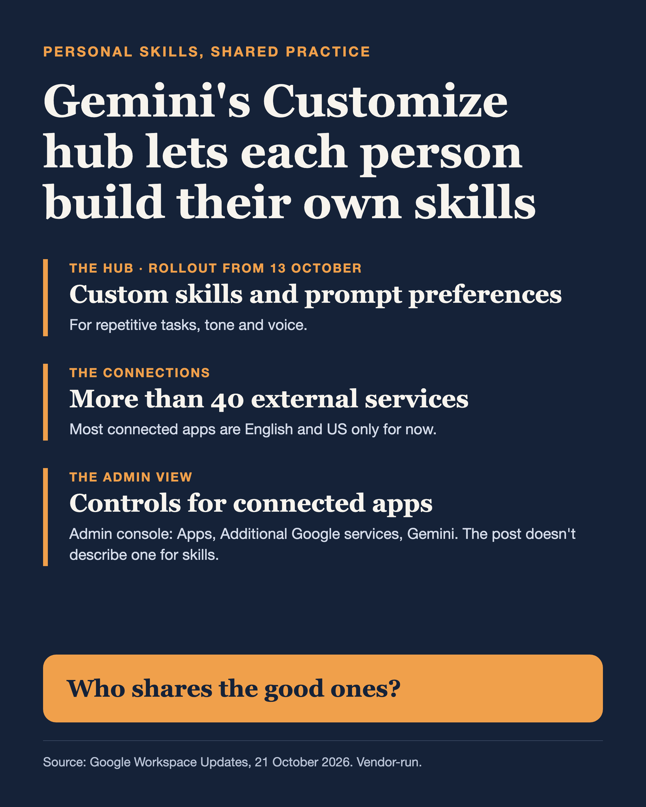

Gemini skills are personal. Sharing them is the organisation's job.
Gemini's new Customize hub lets each person build their own skills. Google's announcement describes admin controls for the connected apps, not the skills.
Google published this on 21 October, and the rollout began on 13 October. In the Customize hub, people can configure custom skills and prompt preferences for repetitive tasks and to keep their tone and voice. They can also add more than 40 external services. It's available to all Google Workspace customers.
Admins can review and manage connected apps in the Admin console under Apps, Additional Google services, then Gemini. The post doesn't describe a separate control for skills. Most connected apps are currently available in English in the US.
This post is 18 days old, which is outside my usual two-week window, but I think it's worth covering for the question it raises.
If you're running AI adoption, a skill is a person's own good habit written down. That's useful, and it also stays with that person unless the organisation does something about it. I'd want a way to find the skills that are working, share them, and decide who approves the connections to outside services.
